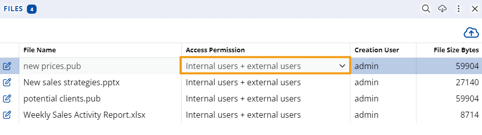
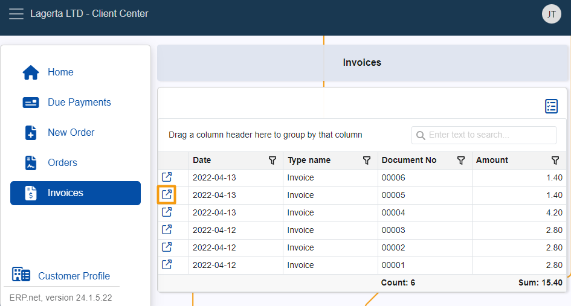
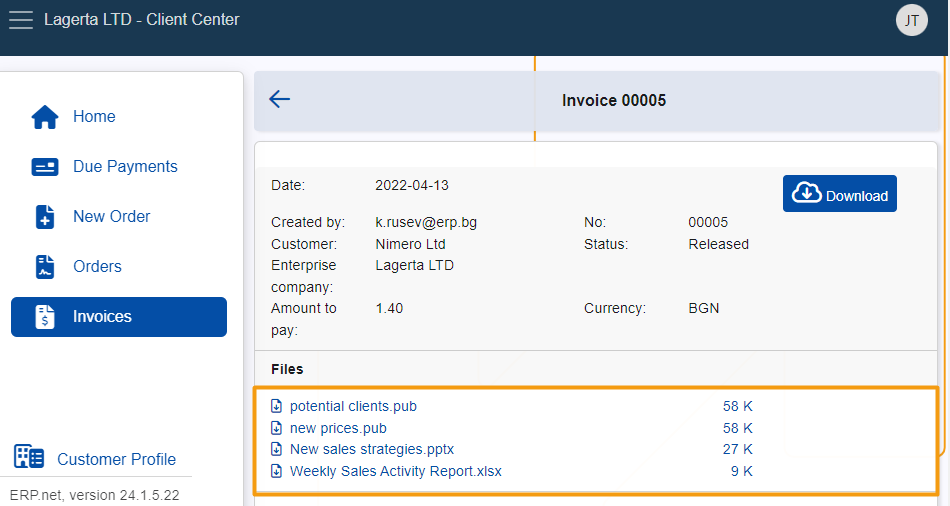

How to download attached files from an invoice
This article provides a step-by-step guide on downloading attached files from an invoice through the Client Center.
Prerequisites
To be able to view and download file attachments from an invoice in the Client Center, you must configure its Access Permissions field through the Files panel of your ERP.net platform instance.
Simply navigate to the respective invoice, expand the Files panel, open its Details and set the value of the Access Permissions field to Internal users + external users.

This must be applied for every invoice attachment you wish to see and download from within your Client Center website.
Step-by-step process in the Client Center
Navigate to the Invoices panel of the Client Center menu.
Open an invoice with attachments by clicking on its respective button.

The invoice’s attachments will appear in a dedicated Files section. You can see their names, file extensions, and size.

Click on a desired file once to immediately download and save it on your device.
Warning
File attachments whose Access Permission field is not set to Internal users + external users will not appear in the Files section.
If none of the invoice’s attachments have this setting configured, the Files section will not appear at all.
Note
The screenshots taken for this article are from v24 of the platform.